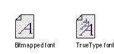
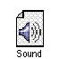

|
Movable Resource IconsThe Finder displays default icons for fonts, keyboard layouts, and sounds, also known as movable resources. The icon looks like a document icon reversed in orientation. The user installs these resources by dragging the icon to the System Folder icon. The user can remove a movable resource by opening the System file icon (or Font Folder icon) in the System Folder and dragging its icon out of the System file. TrueType fonts have a character in three sizes on the icon, whereas bitmapped fonts only have a single character. When a user opens a font icon, the Finder displays a window with a sample of the font in it. Figure 8-44 shows some font icons. Sound icons have a speaker symbol on them, as shown in Figure 8-45. When a user opens the sound icon, the sound plays.  |